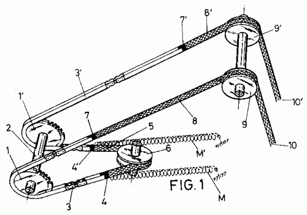

Sistema Mecânico

Trabalho realizado em grupo por todos os alunos cursando engenharia no segundo semestre.
Matéria: Física do Movimento
Cronograma
Período: Segundo Semestre
Data:
agenda
Duração: 4-5 semanas
Papel do Aluno
Aplicar habilidade de cálculo e física
Construir um protótipo de sistema mecânico
Instrumentos e Técnicas
Impressoras 3D
Cura/ Inkspace